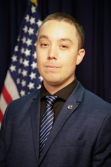

|  |
Nathan Schweikart
Owner of Watchdog Jobs
U.S. Marine active duty veteran with combative tours to Iraq and Afghanistan. Currently holds a Department of State: Secret Clearance. WPPS I & II Certified. Highly motivated to leverage 8+ years of achievements during security career to providing dedicated security and protective service. Over six and a half years in high hazard areas overseas. Served as a force protection specialist/Radio Transmission Officer in Kosovo and as a security element in Beersheva, Israel. Qualifications include a M.A. in Public Policy in Foreign Affairs and a B.S. in Emergency Management & Homeland Security; highly proficient in computer applications such as Microsoft Word, Excel, Outlook, and PowerPoint; comprehensive field training; and extensive experience in safety patrols, security details, public-service activities, surveillance, and management. Carrier of a (Virginia) concealed carry permit. Worked as a federal security guard at Fort Myer, VA and Fort McNair, Washington DC. Completed two (2) one-year security contracts in Beersheva, Israel in support of the IDF and Ministry of Defense.
|